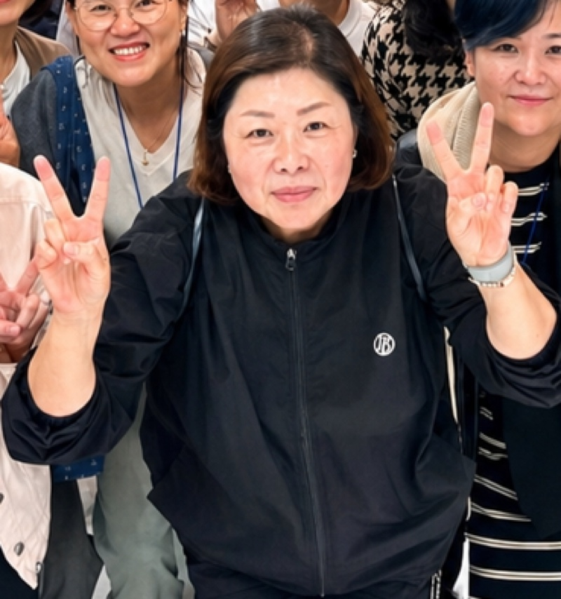

코로나가 오기 전까지 저는 오랫동안 작은 학원에서 영어를 가르쳤어요. 남편은 수학을 가르쳤고요. 아이들이 학원에 오지 않기 시작하자 수입은 줄고 월세도 버거워졌습니다. 그 와중에 몸까지 아팠어요. 걷기 힘들 만큼 어지러워 병원에 갔고, 뇌동맥류를 발견했습니다.
수술을 받고도 오래 쉴 수 없었어요. 대타 강사를 쓸 비용조차 감당하기 어려워 일주일 만에 다시 교실로 돌아갔습니다. 같은 해, 가장 가까웠던 친구를 떠나보냈어요. 장례식에서 돌아온 뒤 더는 미루기만 할 수 없다는 생각이 들었습니다. 살아갈 방법을 새로 찾아야 했어요.
그래서 경매학원에 등록했습니다. 첫 낙찰까지는 오래 걸렸고, 손에 쥔 돈도 넉넉하지 않았어요. 결국 어머니가 병원비로 모아 두신 3,500만 원을 빌려 첫 집을 수리했습니다. 꼭 성공해야 한다는 마음이 간절했어요. 낡은 집을 고쳐 매도하고 나서야, 집의 상태와 수리 방향을 바꾸면 다음 주인이 달라질 수 있다는 걸 몸으로 배웠습니다.
하지만 경매는 기다리는 시간이 길었습니다. 매달 생활비가 필요한 제게는 더 자주 실행할 수 있는 방법이 필요했어요. 임장을 다니다 곰팡이 냄새가 심한 1층 집을 만났습니다. 처음엔 지나쳤지만, 다시 생각해 보니 제 자금 안에서 살 수 있었고 필요한 부분을 고치면 새로운 주인을 만날 수도 있겠더라고요. 그 집을 매입하고 수리해 신혼부부에게 매도한 경험이 구축아파트 급매매를 계속하게 된 계기가 됐습니다.
저는 물건을 고를 때 주변의 경쟁 매물을 먼저 살펴봅니다. 어떤 상태로 나와 있는지, 어디를 고치면 차이가 생기는지, 그 비용이 목표로 한 수익 범위에 맞는지 따져요. 집을 예쁘게 만드는 것만으로는 충분하지 않습니다. 매입가와 수리비, 보유 비용, 실제로 팔릴 가격을 함께 봐야 하니까요.
수강생을 한 번으로 끝나는 인연이 아니라, 평생 함께 가는 동반자이자 파트너로 생각하고 진심을 다해 가르칩니다.
처음엔 제가 겪은 일을 전자책으로 썼고, 그다음에는 강의를 열었습니다. 한 기수씩 수강생을 만나며 수업을 이어왔어요. 설명만 듣고 첫 물건 앞에서 망설이는 분들을 보면서, 매수 검토부터 수리와 매도까지 한 물건의 과정을 함께 살피는 코칭도 시작했습니다.
제게 수강생은 강의가 끝나면 헤어지는 사람이 아니에요. 매수할 때는 함께 급매물을 찾고 제 의견을 보태고, 수리할 때는 경쟁 물건과 차별화하면서도 비용을 아낄 방법을 고민합니다. 매도 가격과 전략을 정할 때도 함께하고, 거래 뒤 세금 신고와 절세를 검토할 때까지 단계마다 계속 이야기 나눕니다. 한 번의 수강으로 끝나는 관계가 아니라 오래 함께 성장하는 동반자라고 생각해요.
수강생의 변화는 제게 큰 기쁨입니다. 제 전자책과 경험을 보고 수강해 2026년 8월 말까지 15건의 매수·매도를 경험한 분도 있고, 임신 중 첫 수업을 들은 뒤 첫 거래를 마치고 인테리어 사업을 시작해 두 지점을 운영하는 분도 있어요. 두 분이 자기 길을 만들어가는 모습을 보면 참 흐뭇합니다. 그분들의 성취는 그분들이 직접 해낸 결과이고, 저는 그 과정을 진심으로 응원하고 함께해 왔습니다.

지금도 저는 현장에서 배우고, 배운 것을 수강생과 나눕니다. 완벽한 답을 대신 정해주기보다 함께 살펴보고 더 나은 판단을 할 수 있도록 돕는 것. 그게 밀리언드림을 통해 제가 계속하고 싶은 일입니다.